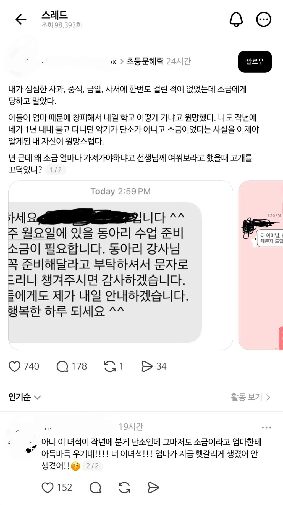
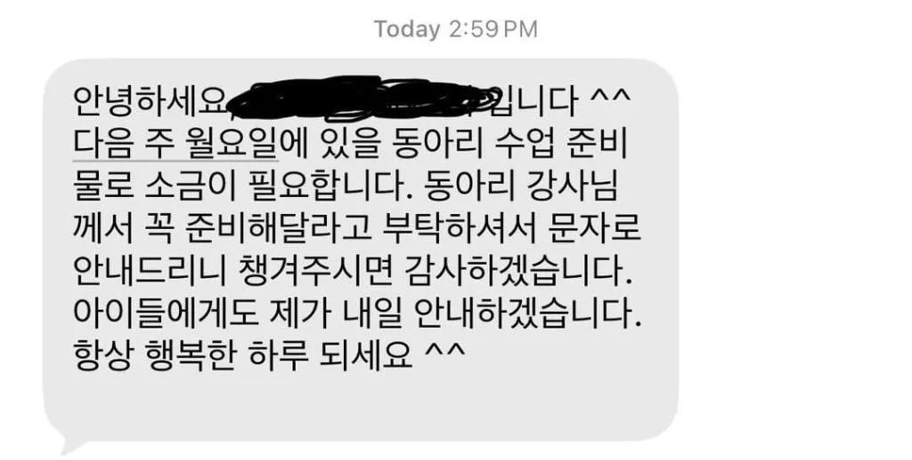
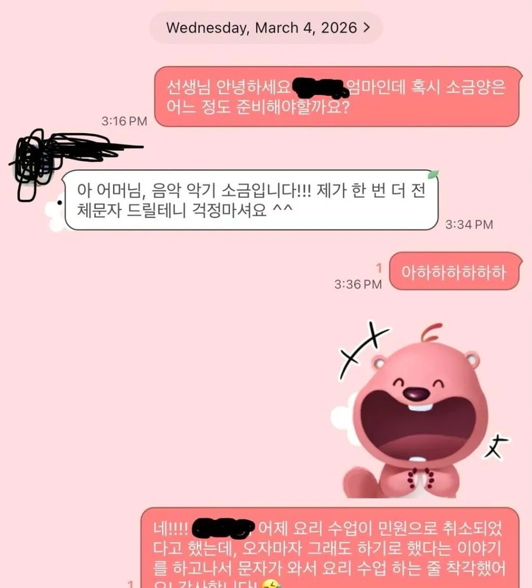

그거 앞에 보조기구 다는거 있음. 그거달고 불면 소리잘나더라고
하지만 평가의 형평성을 위해
치팅은 안댐
우리때가 그래씀
가끔 학주 회초리로 둔갑함.
청테이프 감은 단소는 흉기더라...
내가 나름 어릴때 단소마스터였는데 대나무로 만든거 열받게 소리 안나드라
소리 잘나던데?
비명소리
단소.. 추억이 있지
ㅋㅋㅋㅋㅋㅋㅋ저건 헷갈릴만하지
태황무임중
태태 임중무태
원이 임전무퇴
책상 위에 무릎꿇고 앉아서 저걸로 발바닥 맞음 짜릿함
단소 ... 소리가 안나
저거 소금 의외로 소리 잘남 단소보다 훨씬 직관적임

어머니 성격 호쾌해보임 ㅋㅋ
솔찍히 이건 무죄다.......
민원으로 요리수업 취소됐다는것도 무섭다
얼마나 개지랄했으면
천일염으로 가져갔어야지
단소 나만 못 분게 아니였네..
단소 씨바거 대나무로 만든거 소리 더럽게 안남